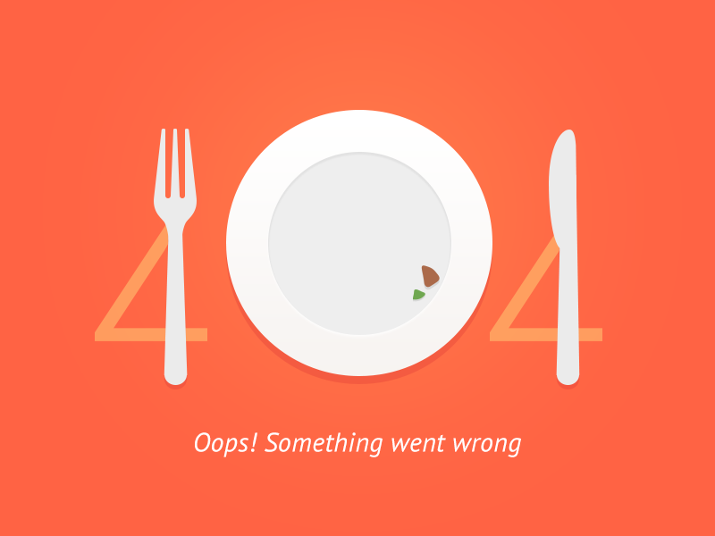

<div class="not-found">
  <div class="not-found__container not-found__container_bg-orange">
    <div class="not-found__box">
      <div class="not-found__img">
        
      </div>
      <div class="not-found__nav">
        <button mat-raised-button class="recipes-side-bar__container-btn recipes-side-bar__container-btn_blue">
          <a class="app-main__menu-item" routerLink=''>
            <i class="fas fa-home"></i> go home
          </a>
        </button>
      </div>
    </div>
  </div>
</div>
